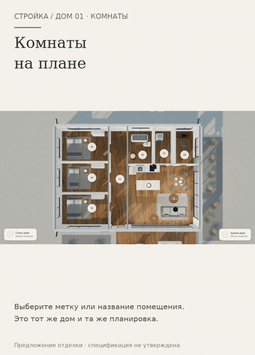

Выберите комнату. Загляните внутрь.
Восемь помещений на плане, короткие пояснения и быстрый вход в комнату. Вернитесь к прежнему обзору или продолжите прогулку с того же места.
Открыть анимированную GIF-версию · План с метками крупно
Если видео не открывается — показать GIF здесь

Открыть интерактивный прототип →
Предыдущий этап: дневной и вечерний свет →
Монтаж настоящих экранов прототипа 20; не непрерывная запись движения. Быстрый переход в комнату не анимирует маршрут через стены. Планировка предложена для обсуждения; её редактирование и автоматический подбор ещё не реализованы. Физический iPhone/Safari не проверен. Рабочий сайт и сервер не менялись.